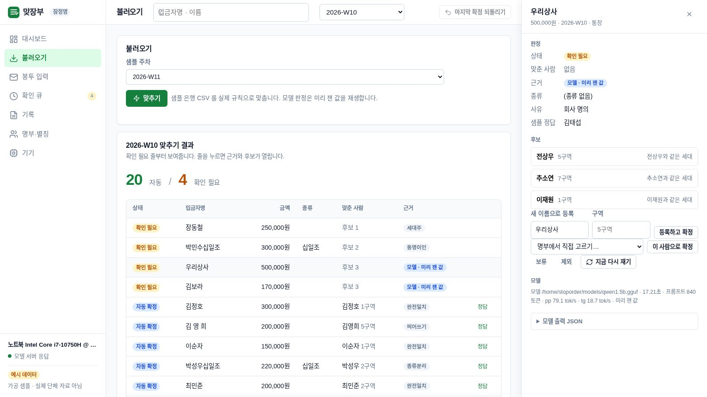

봉투와 통장의 이름을 명부와 맞추고, 매주 기록합니다
단체 PC 한 대 안에서 끝납니다. 규칙이 대부분을 맞추고, 남은 줄은 소형 언어모델이 후보를 세우고, 확정은 사람이 합니다. 고른 답은 별칭 사전에 쌓여 다음 주부터 자동이 됩니다.
인터넷 없이 동작 · GPU 없음 · 공개 코어 Apache-2.0 · 체험은 예시 데이터만

헌금은 주일마다 수거하고, 세고, 이름을 맞추고, 종이에 적고, 다시 전산에 넣고, 연말에 기부금영수증으로 합산해야 끝납니다. 사람 손에 걸리는 칸은 둘입니다. 통장 입금자명은 가족 명의·회사명·한자 표기·「홍길동십일조」처럼 종류가 붙은 줄에서 자동 매칭이 깨지고, 봉투는 이름과 금액을 매주 사람이 칩니다.
한 교회 인터뷰(2026-09-16, 등록 300명, 봉투만 받는 교회): 봉투가 바뀌어 남의 이름으로 적히는 일이 거의 매주 한 번, 수기 영수증에서 특별헌금이 빠진 일이 한 해 서너 번. 프로그램은 후임자가 이어받지 못할까 봐 10년째 못 들였다.작동 방식
언어모델은 한 칸, 확정은 사람
정답이 있는 대조와 합산은 규칙이 하고, 사람의 표기 습관을 푸는 일만 모델이 합니다. 모델이 틀려도 장부가 틀리지 않습니다.
확신이 낮으면 맞추지 않고 묻는 것이 정식 출력입니다. 모델의 결과는 자동 확정되지 않고 항상 확인 큐로 갑니다. 사람이 고른 답은 단체별 별칭 사전에 쌓여 다음 주 같은 줄은 규칙 1단에서 끝납니다.
기능
재정 담당자가 매주 하는 일 그대로
입력은 은행 CSV 또는 봉투 입력 화면, 출력은 대응표·주간 명단·개인별 누적·연말 합산입니다.
은행 CSV 불러오기
내려받은 파일 그대로. 헤더에서 날짜·입금자·입금액 열을 찾고 출금 줄은 뺍니다. 은행 자동 연동은 약속하지 않습니다.
봉투 입력
이름은 명부에서 자동완성, 종류와 금액을 줄줄이. 입력 합계와 계수 총액을 검산합니다. 봉투 경로에는 모델을 쓰지 않습니다.
별칭 사전
확인 큐에서 고른 답이 쌓입니다. 회사 명의, 가족 명의, 개명 — 한 번 고르면 다음 주부터 자동입니다. 파일로 남아 후임자가 이어받습니다.
확인 큐
후보와 근거 한 줄씩. 후보에 없으면 명부에서 직접 고르거나 새 이름으로 등록합니다. 보류·제외·되돌리기가 있습니다.
기록 3종
주간 명단(사람 손이 닿은 줄부터), 개인별 누적, 연말 합산(기부금영수증 기초자료). 미확정 줄은 따로 합계를 냅니다.
엑셀로 열리는 내보내기
명부·별칭·기록이 전부 CSV·JSON 파일입니다. PC 가 고장 나도 복사해 둔 파일로 이어갑니다. 암호화 백업은 준비 중입니다.
AI 활용 방식
언어모델이 하는 일은 한 칸뿐입니다
규칙 2단이 못 푼 입금자명 한 줄을 보고 후보 순서·근거·사유를 JSON 으로 냅니다. 그것뿐입니다.
모델이 하는 것
「우리상사」가 상호인지, 「김보라」가 개명인지 오타인지, 「장동철」이 가족 명의인지 — 상위 후보 5명과 같은 세대 사람, 과거 확정 이력을 보고 후보 최대 3명과 근거를 씁니다. JSON 스키마로 출력을 강제하고 온도는 0 입니다.
모델이 하지 않는 것
확정. 모델 결과는 언제나 확인 큐로 갑니다. 동명이인은 모델을 거치지 않고 곧장 사람에게 갑니다. 금액·합산·기록에는 모델이 닿지 않습니다. 모델이 지어낸 헌금 종류는 원문에 그 글자가 없으면 버립니다.
기본 모델은 Qwen2.5-1.5B-Instruct Q4_K_M(Apache-2.0)이고 llama.cpp 로 CPU 에서 돕니다. 자동 확정 임계는 자모 유사도 0.85이며 화면에 그대로 표시됩니다. 모델의 정확도는 아래 실측표에 유형별로 적습니다 — 재지 않은 숫자는 적지 않습니다.
실측
우리가 직접 잰 값만 적습니다
규칙이 못 풀어 모델이 보는 「확인 필요 줄」 30건(가족 명의·회사 명의·오타·개명·종류+오타·모름, 각 5건)을 같은 스크립트로 기기마다 잽니다.
| 기기 | 모델 | 스레드 | 줄당 초 | pp tok/s | tg tok/s | 후보 1위 정답 | 후보 3 안 | JSON 성공 |
|---|---|---|---|---|---|---|---|---|
| 갤럭시 A31 (4GB) | Qwen2.5-1.5B-Instruct Q4_K_M | 8 | 111.5 (97.3~135.6) | 8.9 | 4.5 | 12/25 (48%) | 13/25 (52%) | 30/30 (100%) |
| 갤럭시 A31 (4GB) | HyperCLOVAX-SEED-1.5B Q4_K_M 자체 약관 · 비교값 | 8 | 106.8 (84.6~129.7) | 8.8 | 3.8 | 12/25 (48%) | 14/25 (56%) | 28/30 (93%) |
| 노트북 i7-10750H | Qwen2.5-1.5B-Instruct Q4_K_M | 4 | 14.7 (12.7~21.3) | 77.4 | 18.8 | 13/25 (52%) | 13/25 (52%) | 30/30 (100%) |
체험 기록(노트북 Intel Core i7-10750H · 4스레드 · Qwen2.5-1.5B-Instruct Q4_K_M · 2026-09-20): 샘플 4주 86줄 중 규칙이 77줄을 풀고 모델이 9줄을 봤으며, 모델 한 줄에 12.9~17.6초(프롬프트 434~449 토큰)였습니다. 규칙만으로 자동 확정한 줄의 정답률은 체험 화면의 「샘플 정답 대조」에서 그대로 셉니다.
지원 기기
조건은 하나, CPU 가 있을 것
모델은 1GB 남짓, 이름 한 줄은 서류 한 장보다 훨씬 짧습니다. 사무실 구석의 낡은 PC 나 서랍 속 폐폰이면 됩니다.
폐폰 — 갤럭시 A31 실측
SM-A315N · 4GB · Helio P65(A55×6 + A75×2) · Android 12 · Termux. 실측 기기이지 서버가 아닙니다.
노트북 — Intel Core i7-10750H 체험 인스턴스
체험 사이트의 인스턴스가 이 노트북에서 돕니다. 4스레드. 기록의 모델 값은 이 기기에서 잰 것입니다.
2013년 이전 PC 측정 예정
AVX 만 있는 구형 데스크톱. 어느 연식까지 실용 속도가 나오는지 표로 만드는 것이 1라운드 계획입니다.
요금
코어는 공개, 번거로운 것은 구독
맞추기 코어와 확인 큐는 공개합니다. 돈은 단체가 혼자 하기 번거로운 것에서 받습니다. 가격은 다섯 곳 이상 인터뷰 뒤에 정하며, 그 전에는 적지 않습니다.
공개 코어 Apache-2.0
- 3단 대조 · 확인 큐 · 별칭 사전 · 기록 3종
- 은행 CSV · 봉투 입력 · 엑셀로 열리는 내보내기
- 단체 PC 에 직접 설치(파이썬 + llama.cpp)
구독 준비 중 · 가격 미정
- 별칭 사전·기록의 암호화 백업과 복구
- 이표기·헌금 종류 규칙팩 갱신
- 명부 프로그램 내보내기 형식 대응
- 담당자 교체 때 인수인계 · 지원
FAQ
자주 묻는 것
그 컴퓨터가 고장 나면 자료는 어떻게 되나요?
명부·별칭 사전·대장·기록이 전부 엑셀로 열리는 CSV 와 JSON 파일입니다. 작업공간 폴더 하나를 USB 나 단체 드라이브에 복사해 두면 새 PC 에서 그대로 이어갑니다. 암호화 백업 기능은 준비 중입니다.
인터넷이 필요한가요?
아니요. 모델도 규칙도 단체 PC 안에서 돕니다. 금액과 이름은 PC 밖으로 나가지 않습니다. 이 사이트의 체험 인스턴스만 인터넷에 있고, 거기에는 가공 데이터만 있습니다.
실제 헌금 자료를 올려서 시험해 볼 수 있나요?
아니요. 체험은 가공 샘플만 받습니다. 헌금 내역은 종교 관련 민감정보라 인터넷에 올리지 않는 것이 이 제품의 출발점입니다. 실제 자료는 설치형에서 단체 PC 안에서만 다룹니다.
후임자가 이어받을 수 있나요?
별칭 사전과 기록이 사람 머릿속이 아니라 파일로 남습니다. 확인 큐의 화면은 「이 세 분 중 누구입니까」가 전부라 따로 배울 것이 없습니다.
동명이인은 어떻게 하나요?
자동 확정하지 않습니다. 명부에 같은 이름이 둘 이상이면 모델도 거치지 않고 곧장 확인 큐로 가며, 새 이름 등록 없이 후보 중에서만 고릅니다.
도구·라이선스
전부 공개된 것 위에 서 있습니다
Python 표준 라이브러리
엔진·웹서버 모두 pip 패키지 0. 파이썬 3.10 이상.
llama.cpp MIT
CPU 추론. llama-server 하나로 모델을 띄웁니다.
Qwen2.5-1.5B-Instruct Apache-2.0
기본 모델. 다른 모델은 실측표에 비교값으로만 싣습니다.
나비(nabi-core) Apache-2.0
웹서버·샌드박스·디자인 시스템을 가져왔습니다. 출처는 NOTICE 에.
이 저장소 github.com/StopOrder/matjangbu · Apache-2.0 · 샘플은 전부 가공 데이터